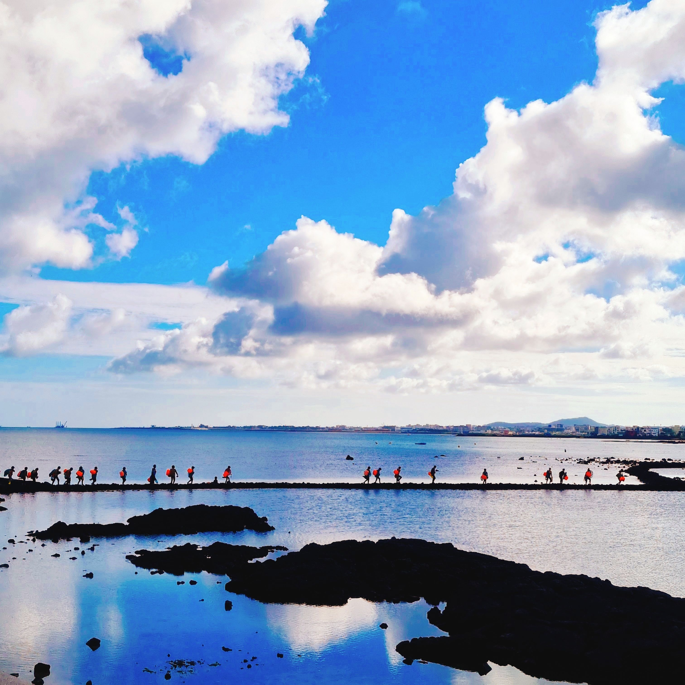
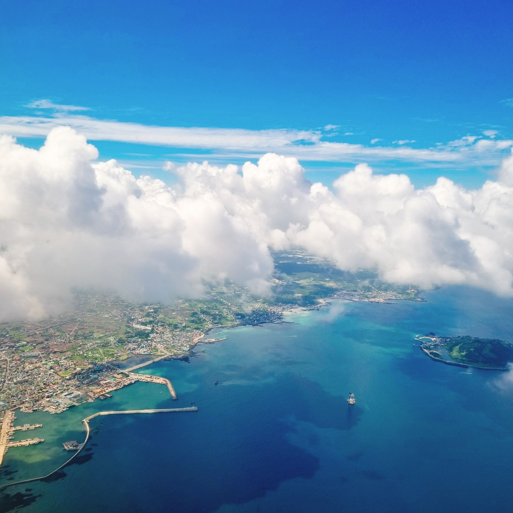
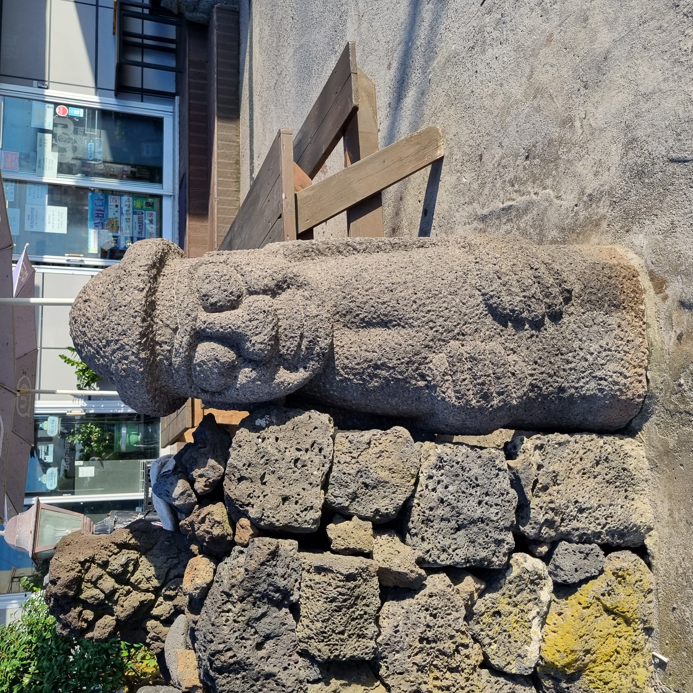

ABOUT
Jeju Island, where the whole island is a huge tourist resource.Hyeopjae Beach, which has an impressive emerald color, is Jeju's representative travel destination.



History
In Jeju Island, there was a Tamna Kingdom established by Yang, Go, Bu, and Samseongsin during the ancient period, and it was integrated into Korea during the Goryeo Dynasty. In terms of administrative district, Jeju Island belonged to Jeollanam-do, but was separated from Jeollanam-do in 1946 and promoted to Jeju Special Self-Governing Province in 2006 under the Special Act on the Establishment of Jeju Special Self-Governing Province and the Creation of an International Free City.Vision
Most of Jeju Island is covered with dark brown volcanic ash, making it difficult to cultivate rice. Instead, special agriculture has been developed to cultivate tangerines and pineapples suitable for climates with an average annual temperature of 15°C or higher while mainly farming barley and potatoes. In addition, the fishing industry that catches hairtail, sea bream, conch, and abalone was developed by taking advantage of the fact that the slope is the sea. Today, although it has decreased a lot, there were many haenyeo who dug up seafood. In addition, livestock farming was developed in the middle mountainous area to graze horses and cattle, and Jeju ponies have been a specialty of Jeju since ancient times.Goals
Hyeopjae Beach, which has an impressive emerald color, is one of Jeju's representative tourist destinations, and the Jusangjeolli, which overlooks the waves, and the Yongmeori Coast, a promenade on the sea, are considered natural scenery that can only be seen in Jeju. Seopji Course, known as the filming location of the drama, is steadily loved, and Hallabong, black pork, and silver hairtail are representative foods of Jeju.- list item
- list item
- list item
- list item